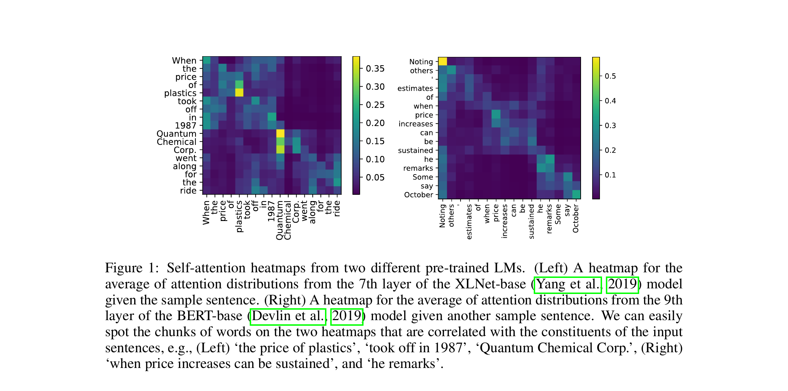

Simple probing methods that extract constituency parse trees from pre-trained language models (BERT, ELMo, XLNet) achieve F1 scores rivaling or surpassing dedicated unsupervised grammar induction systems, demonstrating that PLMs implicitly encode phrase-level syntactic structure.

Pre-trained language models (PLMs) such as BERT, ELMo, and XLNet achieve state-of-the-art results on virtually every NLP benchmark, suggesting they internalize substantial linguistic knowledge during pre-training. Yet it remains unclear what kind of syntactic structure these models capture and how accessible it is. Grammar induction -- the task of recovering hierarchical phrase structure from raw text without annotated treebanks -- provides a rigorous test bed for this question.
Key Research Question: Can pre-trained language models produce meaningful constituency parse trees without any syntactic supervision? If so, how do these "free" parses compare to purpose-built unsupervised grammar induction systems that have been explicitly designed for this task?
Why It's Non-Trivial: Prior unsupervised grammar induction models (PRPN, ON-LSTM, URNNG) introduce specialized architectural inductive biases -- such as gating mechanisms or structured variational inference -- to discover syntax. Showing that generic PLMs can match these systems would imply that standard language modeling objectives already encode rich syntactic knowledge, without task-specific design.
At the time of publication, the dominant approach to probing PLMs for syntax focused on downstream supervised tasks (e.g., part-of-speech tagging, dependency parsing). This paper takes a complementary, fully unsupervised approach: it designs scoring functions over the PLM's internal representations and uses them directly for chart-based parsing -- no fine-tuning, no labeled data, and no task-specific parameters.
The Broader Context of Grammar Induction: Unsupervised grammar induction has been a central problem in computational linguistics for decades, dating back to early work on distributional clustering and Bayesian PCFGs. Classical approaches such as the CCM (Constituent-Context Model) and DMV (Dependency Model with Valence) relied on hand-designed probabilistic models. A newer generation of neural grammar induction models -- PRPN, ON-LSTM, and URNNG -- made significant strides by embedding syntactic biases into neural language model architectures. This paper asks the provocative question: are those biases even necessary, given the scale and expressiveness of modern PLMs?
This question is especially timely because PLMs are trained on orders of magnitude more data than typical grammar induction systems. BERT, for example, is pre-trained on 16 GB of text (BooksCorpus + English Wikipedia), whereas neural grammar induction models like PRPN and ON-LSTM are trained on the relatively small PTB training set (~40K sentences). If sheer data scale enables PLMs to implicitly learn syntactic structure, this has profound implications for our understanding of how syntax emerges from distributional statistics.
The core idea is elegantly simple: if a pre-trained language model truly "knows" that a contiguous span of words forms a syntactic constituent, then the model's internal representations should reflect this -- the representation of that span should differ systematically from its surrounding context. The authors operationalize this intuition through three complementary scoring functions and a standard chart-based decoder.
Core Intuition -- The Inside-Outside Hypothesis: Consider the sentence "The cat sat on the mat." If "the cat" is a genuine noun phrase constituent, then the PLM's representation of the tokens inside this span should form a coherent cluster that is distinguishable from the representation of the tokens outside it ("sat on the mat"). Conversely, for a non-constituent span like "cat sat," the inside and outside representations should be less differentiated because the span does not correspond to a meaningful syntactic unit.
For each candidate span (i, j) in a sentence, a score is computed by measuring the divergence between the span's inside representation and its outside representation. Three scoring variants are proposed:
(a) Cosine similarity (sim): Compute the average hidden-state vector of tokens within the span (h̅in) and the average vector of tokens outside the span (h̅out). The constituent score is defined as 1 - cos(h̅in, h̅out). The intuition is that genuine constituents should have lower cosine similarity with their context, because they form self-contained syntactic units.
(b) L2-norm difference (norm): Instead of cosine similarity, this variant uses the L2 norm of the difference between inside and outside representations: ||h̅in - h̅out||2. Larger norms indicate greater divergence and thus higher constituent likelihood.
(c) Perturbed representations (perturb): This variant leverages BERT's masked language modeling capability. For each token in the span, compare its representation when the outside context is present vs. when it is masked out. If the span is self-contained (a real constituent), masking outside context should change the representation less than for non-constituent spans.
PLMs consist of multiple layers, and different layers encode different types of linguistic information. The authors systematically evaluate each layer independently and also explore layer aggregation strategies (averaging across layers, selecting the best single layer).
They find that middle layers (e.g., layers 6-9 of BERT-base) encode the most useful syntactic information for grammar induction, while early layers capture more surface-level features (e.g., positional information, character-level patterns) and later layers encode more task-oriented semantics. This finding aligns with the emerging "linguistic pipeline" view of Transformer layers, which was less well-established at the time of publication.
Importantly, the authors also investigate subword token handling: since BERT uses WordPiece tokenization, multi-token words must be collapsed into a single representation (via averaging) before span scoring can be applied at the word level.
Given the span scores from Step 1, a standard CKY-style dynamic programming algorithm finds the binary tree that maximizes the total constituent score. Formally, for a sentence of length n, the algorithm considers all O(n2) possible spans and uses dynamic programming to select the set of non-overlapping spans that forms a valid binary tree and maximizes the sum of constituent scores.
This produces a full unlabeled constituency parse for each sentence without any training or parameter estimation -- it is purely a function of the PLM's frozen representations. The method is completely unsupervised: no labeled parse trees, no grammar rules, and no trainable parameters are involved.
The same probing framework is applied uniformly across multiple PLM architectures to test whether the findings generalize beyond any single model family or pre-training objective:
BERT (bidirectional masked LM): Uses the Transformer encoder with masked language modeling. The bidirectional attention allows each token to attend to both left and right context, making inside-outside comparisons particularly natural.
ELMo (bidirectional LSTM LM): Uses concatenated forward and backward LSTMs. As a non-Transformer architecture, ELMo tests whether syntactic awareness is specific to attention-based models.
XLNet (permutation-based autoregressive LM): Uses Transformer-XL with permutation language modeling. This tests whether the bidirectional nature of BERT's training is essential or whether permutation-based objectives also capture phrase structure.
Experiments are conducted on the standard Penn Treebank (PTB) Wall Street Journal (WSJ) corpus, Section 23 (the standard test set). Two evaluation settings are used: WSJ10 (sentences of length ≤ 10, the traditional setting for unsupervised parsing used since Klein & Manning, 2002) and the full WSJ test set (all sentence lengths). Performance is measured by unlabeled sentence-level F1 against gold constituency trees, with punctuation removed following standard practice.
Evaluation Protocol Details: Following convention in unsupervised parsing, trivial spans (single words and the full sentence) are excluded from evaluation. The produced trees are binarized for fair comparison. For multi-token words in BERT/XLNet (due to subword tokenization), all subword tokens are merged by averaging their hidden states before span scoring. No hyperparameters are tuned on the test set -- the only choice is which layer to use, which can be selected on a small validation set without any labeled trees.
| Model | Type | F1 (%) |
|---|---|---|
| Random Trees | Baseline | 34.7 |
| Left Branching | Baseline | 28.7 |
| Right Branching | Baseline | 56.7 |
| PRPN (Shen et al., 2018) | Grammar Induction | 47.9 |
| ON-LSTM (Shen et al., 2019) | Grammar Induction | 49.4 |
| URNNG (Kim et al., 2019) | Grammar Induction | 52.4 |
| BERT-base (ours) | PLM Probing | 51.6 |
| BERT-large (ours) | PLM Probing | 53.6 |
| ELMo (ours) | PLM Probing | 42.8 |
| XLNet (ours) | PLM Probing | 48.3 |
| Model | Type | F1 (%) |
|---|---|---|
| Right Branching | Baseline | 39.8 |
| PRPN (Shen et al., 2018) | Grammar Induction | 38.1 |
| ON-LSTM (Shen et al., 2019) | Grammar Induction | 39.0 |
| BERT-large (ours) | PLM Probing | 45.6 |
Beyond aggregate F1 scores, the authors conduct qualitative analysis of the induced trees. The PLM-based parser tends to correctly identify noun phrases and prepositional phrases, which are the most frequent constituent types in English. It also handles coordination structures (e.g., "X and Y") reasonably well. However, the parser sometimes struggles with verb phrases, particularly when the VP boundary includes complex complementation or adjunction.
Constituent-Type Breakdown: Analysis of recall by constituent label reveals that the method achieves highest recall on NP (noun phrases) and PP (prepositional phrases), which together account for the majority of non-trivial spans in the PTB. Performance on VP (verb phrases) and SBAR (subordinate clauses) is lower, suggesting that these higher-level structural decisions are less directly encoded in the PLM's span representations.
Among the three proposed scoring functions, the cosine similarity (sim) variant generally performs best, followed by the norm-based variant. The perturbation-based method, while conceptually interesting, shows more variable performance across layers. This suggests that simple geometric relationships in representation space are sufficient to detect constituency -- more complex probing mechanisms do not necessarily help.
Published at ICLR 2020, this paper made several important contributions that influenced subsequent research directions in NLP and representation learning: